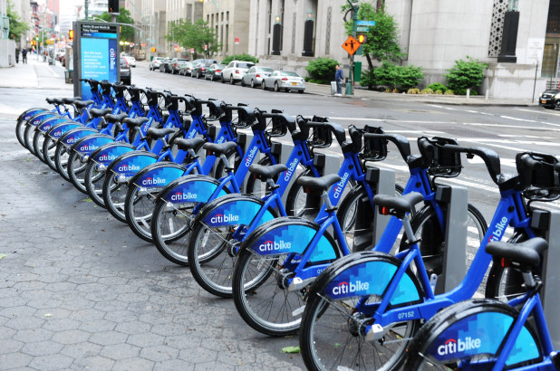

This project focuses on three major cities in the US with the best bike-sharing programs: New York City,
Washington D.C. and Chicago. We used machine learning to analyze all the reviews of these programs from both Yelp and
TripAdvisor. Specifically we focused on Natural Language Processing [NLP] to analyze the reviews themselves, since the ratings,
which are a range from 1 to 5 stars, don't provide enough information on their own. The analysis offers a look into
the frequency of certain types of reviews.
Our data cleanup involved scraping data from those sites with BeautifulSoup and
using Jupyter Notebook to merge tables and get rid of any unnecessary data. There was a lot of data to clean
for this project since it was not structured in a way that would've been easy to interpret.